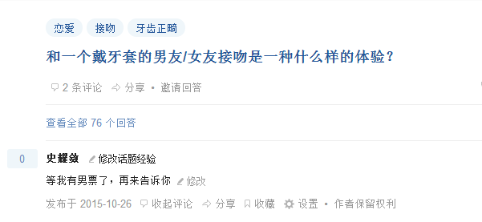

正文:
6月1日：更新整牙前后图片，回答一些常见问题，增加拔智齿和卸牙套的过程。请大家多多点赞哦！
问：你的正畸在哪里做的，费用是多少？
答：我坐标杭州，正畸+拔牙+打支抗钉等所有费用加在一起约15000左右，用的是最传统的金属自锁托槽。如想知道具体医院，请翻评论。
问：你正畸用了多长时间?
答：2013年10月23日—2016年5月31日，用时951天。医生说作为成年人正畸，这个时间是正常的。接下来我打算长期佩戴保持器，因为特别怕反弹。
问：你正畸一共拔了多少牙齿？
答：戴上牙套前，拔出了4颗正常的牙齿，正畸末期拔出了下牙两颗智齿，所以一共拔了6颗。上麻药拔的，一点都不疼。
问：你正畸以后有没有“牙套脸”？
答：我也不知道什么是牙套脸，查了下网上的说法，就是太阳穴凹陷，还有颧骨突出。我本人颧骨本来就比较突出，正畸期间脸型变化挺大的，以前因为龅牙，加上有口呼吸的恶习，腮帮子肿大 ，没有下吧；正畸结束后，居然有下巴了。至于有没有牙套脸请各位判断，照片在文章最后。
问：戴牙套是否会影响生活？
答：会，人会变得越来越自信，觉得自己很特别，根本不在乎别人眼中的自己。
问：我XX岁了，请问现在正畸还来得及吗？
答：我问了我的主治医生，她手头年龄最大的病人将近50岁，用的是隐适美。
-——-———————————以下为原文———————————————————————
一直觉得自己是个非常平庸的人，在知乎上只有看的份，没有回答的资格，但是今天终于找到自己可以回答的领域啊！
我今年28岁，26岁才戴牙套，到2015年10月23日，我就正畸满两年了。趁此机会把这700余天的心路历程记录下，为自己留一份纪念。
戴牙套的起因——童年阴影的拔除仪式！
从小两个门牙凸出，就是人们俗称的龅牙。家里面的亲戚经常拿我的牙开玩笑，说我吃西瓜最方便了，两个大门牙一扫，就可以把瓜肉刮干净。虽然这种调侃性的语言没有恶意，仅仅是想在大家庭中制造一点活泼的气氛，但是年幼的我还是感觉到了我的牙是我外貌中的一处缺陷，会让大家嘲笑我。但是放心，我心理健康，并没有对我家亲戚产生厌恶的感觉，因为他们说的是事实嘛。
（楼主把pose最二，头发最短的图片都亮出来了，欲扬先抑，造成正畸前后巨大的反差，骗赞利器）
大约在初高中时，我曾主动对父母提出过正畸要求，但是时间久远，我已经忘记了父母以什么理由否决了，大概是觉得价格贵，或者正畸过程很漫长很痛苦，所以不了了之。哎，想来，我那时再坚持下，说不定早在十多年前我就拥有一口整齐美丽的牙齿，过上幸福的生活了吧。
 （这张图片拍摄于2013年的中秋，正好是我正畸前的一小段时间，这张图片中可以看出我的龅牙的轮廓，闭嘴的时候也显得有点勉强）
（这张图片拍摄于2013年的中秋，正好是我正畸前的一小段时间，这张图片中可以看出我的龅牙的轮廓，闭嘴的时候也显得有点勉强）
一直到2013年，此时的我已工作，攒下了一些小钱，这笔钱买不了房，也去不了很远的地方，童年的遗憾再次袭击我的心头——我决定在26岁高龄，开始正畸！
（这是几年前朋友照的，刚好一个正面，一个侧面，把我的劣势完全暴露了——牙齿突出，腮帮子肥大）
当我向父母提出这个想法的时候，自然（又一次）遭到反对，理由很简单，都一把年纪了，何必花万把块钱去搞这些（难道26岁就已经到了可以放弃自己的年纪了吗？）当然，理性的理由也有的，比如，成年人的牙槽肯定不像发育期的孩子那样可塑性那么好，时间肯定很漫长，两年后我就28了（难道我不整牙两年后就是24吗？）……我不想听！
我一直是拖延症很厉害的病患，但是那时不知道哪里来的冲劲，就以洗牙为契机，借着咨询正畸的名义，踏进了正畸科，开始找医生。
（正畸科的环境，怎么样，不错吧，可惜现在换地方了~）
这里要插一句，我选择的是一家民营牙科医院，而且是我大学的附属牙科医院，有一种亲切感，环境也不错，用的是德国设备。我在正畸这件事上有些冲动，所以没有“货比三家”的过程，就很随缘地选择了这家医院开始正畸治疗。
戴牙套路线图——整牙最痛苦的其实是前期啊！
正畸是个很漫长的过程，前期工作也非常复杂。外人往往以为戴着牙套的我，一定很痛苦，其实最痛苦的是起始。
（这个是我的牙齿X光片，龅牙程度也看得很清晰。）
正畸的第一步就是拍X光片，以及制作牙模。当时医生对我的判断是，牙齿骨性凸出，角度还有点大，并且正畸需要拔除4颗牙齿。当听到要拔牙的时候，我有些犹豫了，因为对中国人来说，拔牙并非常事，况且成年人的牙齿一旦拔除，就不可能再重新长出来，牙根还牵扯到很多神经，万一有个闪失，后果不堪设想。
但是我当时的想法是——我要抓住最后的一次机会，做些可以改变我一生的事情（当时可能想太多了），我决定——拔！
我以我的倔强，决定一个人承受这些必要的痛苦，只是轻描淡写地告诉家人我要拔牙，并没有说清几颗牙，以及什么位置。妈妈一开始很反对，但是见我这么固执，也只能由着我了。她曾打算来陪我，但是我不肯，因为我觉得我已经成年人了，再就是不想让妈妈看到拔牙这么血腥的场面。就这样，从两年前到现在，我都是一个人去复诊，一个人去做必要的一些小手术，我也没有让朋友来陪我过。
当然这其间还包括调理口腔环境和牙龈健康，洗牙，清除牙龈下面的结石，拍摄各种角度的牙齿照片等等。拔牙大约是在接下来的两周分次进行，每次拔除2颗牙。具体是上牙的4和下牙的5，左右对称。拔牙中注射了局部麻药，并不感觉很疼，但是仰躺在无影灯下，眼睛上蒙着消毒布，各种金属器械的声音还有医生的对话我全部能听到，真的有种无助感，还好我的主治医生是位心思细腻的女性，大概能感受到我内心的恐惧，她会很贴心地用手臂围住我，缓解我的紧张。拔牙的时候感觉不到疼痛，但是其他感觉还在，那种感觉很像是用勺子在挖一块结冻的冰激凌，拔牙后之后只能喝粥之类食物，自然不用多说了。
拔牙后是分牙，就是在大牙的牙缝里塞进一个小小的橡皮圈，经过一周时间，牙间就会分开缝隙，便于安装一些正畸的器械。这个分牙的过程，那叫个酸爽啊，牙齿好像是被上了紧箍咒，咬紧牙关时候疼，张嘴的时候疼，咀嚼的时候疼，每天最舒服的时候就是躺在床上准备睡觉的时候，因为睡着了就不疼了，幸好一周很快就过去。医生检查，发现我有一侧的分牙器失踪了（可能被我吃掉了），但是牙缝还在，所以很顺利了套上了一个连接两侧大牙的装置（我也不知道叫什么），用来固定不用移位的大牙。
（这是我2013年刚戴上牙套没几天拍摄的，不过这张图片看不出门牙突出的程度，倒是下排歪歪的牙齿挺清晰的，(⊙﹏⊙)b）
终于，在第19天后，我黏上了全口的矫正器，正式开始牙套姐的生涯！对了，忘了说了，考虑到我预算有限，加上工作对外貌要求不高，所以我选择了最最普通，最最传统的钢丝牙套。
我治疗的时候还发现，成年人正畸比想象的多，成年人正畸只是时间耗费得长一点，只要遵医嘱，还有有机会拥有一口漂亮的牙的。复诊的时候曾经有见到一位姐姐，说自己想怀二胎，不知道正畸会不会对孩子有影响，医生也答复她没影响，而且因为口腔卫生比较好，还能少得很多病。
牙套姐的日常——每天刷牙刷牙刷不停!
刚戴上牙套的那几天，自然是很痛苦的。黏上牙套的三个小时后，我就预感这辈子都吃不了固体食物了。那种隐隐地疼，比给我一刀子都要难受，别人给我一片西瓜，我用牙尖咬西瓜尖都咬不动。接着就是口腔溃疡泛滥，很想抿嘴，但是口腔内壁贴着金属扣的那一刻就会痛到生无可恋。但是——转折就是这么突然，熬过了前两周，我就跟什么事情都没有发生过一样，很自如地吃饭喝水了——人的适应能力就是如此强大！当然，每月复诊后的头三天，我还是会很难受，但是挺过去就好了！
（这是我正畸那天的自拍）
日常生活中，还要注意保持口腔卫生，吃完饭后，好多食物残渣都会挂在钢丝上，抠出来还能当夜宵你信不信！所以我每天吃完三餐都刷牙。医院并没有强迫我买医院的牙刷和牙膏，所以我都是自己去淘宝的正畸用品店购买的，经过一段时间的试用与摸索，我大致购买了这些清洁口腔的东西：刷毛很细很软的牙刷，正畸专用的抗敏牙膏，牙线，牙线棒、以及牙蜡（防口腔溃疡）。因为我性格比较大大咧咧，再加上荷包不厚，所以没有搞得很讲究，好用、便携就行了。
起先刷牙我就是按照老办法刷牙的，但是在每月复诊的时候，医生经常批评我牙齿不干净，牙缝里有食物残渣，而且牙龈下很快又积攒了结石，勒令我学习贝氏刷牙法，好好护理牙齿。还有一点我必须承认，牙线用了几天新鲜劲儿就过了，在我的小工具包里沉睡了。我错了！说到贝氏刷牙法，我觉得它的精髓就在于，刷牙的重点并非牙齿表面，而是牙齿和牙龈的接缝处，因为那里经常会有牙石沉淀！只有健康的牙龈才能让正畸继续下去，这也是在医生在正畸前，要为我做牙龈护理的原因。说来也奇怪，没有正畸前，刷牙时牙龈还会出血，反而是正畸后，刷牙时就鲜有出血的情况了，想来也和医生的护理有关。
平时吃东西并没有忌口，螃蟹、鸡爪子、小龙虾照样吃，遇到过最大的障碍是一块七分熟的厚切牛排，两年下来根本没有瘦下来的情况，所以想要减肥而正畸的路子是行不通滴。真正吃起来麻烦的是苹果和梨之类浑圆的水果，需要切成小块，送入口中比较方便。当然了，山核桃我是绝对不敢咬的。
有几次在睡梦中，梦到牙齿掉落的情况，因为梦里情景很逼真，似乎真的能感受到牙齿脱落的一瞬，也能尝出牙血的咸腥味，所以醒来后真的会吓出一身冷汗。但两年中只梦到过2、3次，心理还承受得住。
遇到困难了——支抗钉反复松动！
支抗钉就是一颗小小的钉子，植入牙床后，起到支点的作用，是帮助我的门牙牵引收回的重要装置。当初医生在和我说治疗方案的时候，我就知道需要安装这个装置了。大约是2014年的夏季，我开始植入了第一对支抗钉。植入的过程也是需要局麻的，手术时我的主治医生叫来强壮的男实习医生，生生地，把两颗钉子，拧到我的两侧的牙床里。其实不疼，但是我的头和下颚被医生按得酸疼，没办法，因为力的作用是相互的嘛！
但是在接下来的大半年里，这两颗支抗钉一直很不安分啊。左侧的钉子，松动过2次，补打了2次；右边松动过1次，补打了1次，所以加起来，相当于我挨了5钉子！赚了有没有！对于这个松动问题，医生推测可能是我牙床骨质不均导致的。每次安装钉子后，都有2周的休息，所以这五次下来，也耽误了大半年时间，心理上也挺折磨人的，因为这个直接影响到正畸效果啊。
（这些年陪伴过我的橡皮筋们，仔细看，他们都是boy的名字，就把他们看成我的前男友吧。）
不过幸好一切都稳定下来了，配合橡皮圈的牵引，门牙也很快到了它该在的位置。前段时间我还装了舌侧沟，配合橡皮圈，使上下颌能较好地咬合。
强大的内心——戴牙套的妹子最特别了！
其实戴牙套后，我的各种观念也开始转变。
首先，牙齿好重要啊！我的主治医生电脑的屏保里，闪烁着这么一句话：每一个爱护牙齿的人，都有一颗贵族的心。你可以认为这是一种营销，但是也蛮有道理的。俗话说民以食为天，假如没有牙齿，这漫长的人生将少吃到多少好东西啊！年轻时不好好爱护牙齿，等老来牙齿掉光了，有大把退休金又怎样，饭都吃不下，多惨啊！所以，牙齿是陪伴我们一生的钻石，一定要好好守护哦。此外我也慢慢关注起别人的牙齿，“以牙取人”，我会特别喜欢有一口漂亮牙齿的人。并且以我血的教训，催促亲戚朋友赶紧保护小朋友的牙齿，早发现早治疗，不要耽误，免得错过最佳时机。
（这是2015年夏天拍摄的，因为经常刷牙的关系，牙齿干净了很多，经过2年的矫正，我的龅牙也基本收回去了，图中正处在收牙缝的阶段。）
我心超大的，戴牙套稍微会影响美观，但是我高兴起来就会笑得露出牙套——反正我丑我看不见，恶心别人去吧！牙套对于我，象征着很多东西，比方说一颗永远不放弃自己的心，做任何事都不嫌晚的自信心，还有把握自己生活的控制感，简直棒透了！还会觉得自己很特别，能给人留下深刻印象，就算是拍照片，也可以露出自己的大牙套。
（2016年4月拍摄的图片，坦然接受戴牙套的自己）
（2015年12月，妹妹结婚，我做伴娘，难得有那么精致的妆容，请容我臭美虚荣下。）
（拍摄于2016年1月，因为牙齿不突了，嘴好看许多，于是我成了口红控，不要问我这支色号，因为这是别人的口红。）
戴牙套也有福利啊，医院里的实习医生可帅可帅了！个子好高，经常戴着口罩只露出两只眼睛出现在我头顶直线距离20厘米左右的地方，而且这个时候我流口水也很正常啊，因为嘴巴一直张开的啊~主治医生比较忙的时候，帅哥实习医生就会来扎小钢丝，还有小手术的时候负责按我的头（快捏爆了！）说话声音超温柔的，我咨询他问题，他都会很有耐心的回答，口吻就像是在和小朋友讲话一样的，哈哈哈。
假如这是一锅鸡汤，到这里的话应该会收获一段完美的爱情——然而并没有（摊手）。不过，原因绝对不是牙套，而是我性格上的劣根性。不过想想也蛮遗憾的哈，我都不能帮人解答带牙套KISS是什么感觉、戴牙套做羞羞的事是什么体验之类的问题啊~（脑补中）。
目前正畸已进入收牙缝阶段，左右各有1-2毫米的小缝隙，帅帅的实习医生说年底可能就会收缝，实在是太好了！不过成年人正畸，也非常怕反弹，我有终生都佩戴保持器的打算啊~
（这是2015年8月拍摄的照片，正好照到我的侧脸。效果怎么样大家自己评判吧~
画面远处有一缕阳光穿透厚厚的云层，寓意吉祥，送给走在正畸路上的各位吧！）
--------------------------------------------------------------------------------------------------------------------
终于写出来了，怎么感觉如此地平淡呢？我只是从一个患者的角度，随便谈谈这两年的感受，期间有紧张和痛苦，但是挺过来就好了，甚至根本不值得一提。希望接下来的几个月正畸顺利，奖励我一口漂亮的好牙！
-————————2016年6月1日更新内容——————————————————————
（拍摄于2016年3月，下巴的线条变好了，人也自信好多。）
最后半年的冲刺——终于摘牙套了
时间来到了2016年5月月，牙齿基本排平了，咬合也没问题了，医生说我月末就可以摘牙套了，但是——我下牙有2颗智齿必须尽快拔掉，因为怕将来会再生长，把前牙挤歪。起先，医生让我来拔智齿，我内心是很抵触的，因为我的智齿挺安分的，已经长出来了，不疼，也没有歪长，只是没有对应的上排牙齿，所以没有咀嚼效率，而且网上流传的拔智齿过程，跟恐怖片儿一样，好可怕！但是医生说什么就是什么吧，于是五月初我预约了拔牙。
经过量血压，问病史一些环节后，我第一次见到要给我拔智齿的医生，就感觉他超级年轻，很帅很雅痞，头顶好像染了一层“奶奶灰”——我有点不放心。助理医生很热情很骄傲地说，XXX名医院的医生解决不了的患者，都是推荐到这位医生手里拔牙的哦！我也想摆出，我是这家医院的“常客”的不屑，说这个椅子没有正畸科的舒服，其实我知道我是缺乏安全感，内心傲娇。医生就跟我开玩笑说，这个躺椅价值一辆法拉利哦——艾玛，态度好温柔——好吧，碰上老司机了，我乖乖躺平，医生给我上麻药。这里说下，拔智齿的费用比较贵，不算医保的话，用国产器材是500，用进口器材需要700，我选择了国产的，有医保的话，最后自费250元左右，这只是拔一颗智齿的价格！
接下来我就见证了这位医生的好手艺！！！上了麻药后的几分钟，我感觉自己下半张脸都石化了，于是盖上遮光布，涂上护唇油（我不晓得为什么要上护唇油），我张大嘴巴，只感觉医生好像划开了两个口子，然后用钳子一拔，我还以后苦的在后头呢，医生说：已经拔好了！天哪，麻药五分钟，拔牙三秒钟啊！我都来不及发出撕心裂肺的叫声，居然就结束了！！！我咬着棉签止血，去缴费了。隔了7天又再去拔了另一侧的智齿，过程差不多，就不重复了。
这期间我感觉我的身体好到一定程度，除了晚上有些轻微低烧外，基本没什么不适。遵医嘱，当天晚上没有吃太烫的东西，没有洗热水澡，不刷牙，口水都咽下去，第二天早上我就可以吃固体食物了，上班的时候我不说都没人发现我拔过智齿。从此以后我就成了这位医生的粉儿（请不要跟我提实习医生小哥，好嘛！谢谢！）以后杭州地区谁需要拔智齿，我强烈安利这位医生给你们！我有他微信号~
激动人心的5月31日终于来临了！起床之后，我用并不娴熟的技术，美美地化了个妆，穿上了平时不怎么穿的裙子，然后去医院了。这里有个小插曲，我由于过分激动，尽管穿着平底鞋，我还是在距离医院的50米的地方，华丽丽地扭到脚脖子了！我强忍着剧痛，拖着一条残腿，进了医院，让护士小妹给我拿了个冰包敷起来！
（三下五除二，医生就把我的牙套拆下来了，边上蓝色的是牙模的屑屑）
这里要说明下，摘除牙套时间有点长，所以医生安排在非双休日里，这样病人不多，有半天时间可以对付我。医生检查了下，确认可以摘牙套了，然后一个个撬开了牙齿面上的金属扣，然在用钻子磨去胶水之类的东西，还帮我把牙齿上的污垢都磨掉，牙缝里的脏东西也剔除，这个过程有些酸爽，最后我的整洁的牙齿终于浮出水面啦！
（这个就是我原来的牙齿的模型，医生说这个要留给医院的。）
接下来，医生让护士帮我拍医学照片，就是和正畸前一样，牙齿各种角度的照片，里面外面，正面，斜四十五度角，侧面九十度，各种拍。还拍了X光片，留给医院保存。护士还帮我做了一个正畸后的牙模，做保持器用。我问医生可不可以把正畸前的丑牙牙模给我，医生说不行，那个也要由医院保存。好吧，这下我是彻底告别那个“大龅牙”了。
（我的医生用手机翻拍电脑上的照片，比较糊，但是已经说明了我牙齿的变化，连下巴都有了）
（脚上敷着冰袋和医生合影）
这个时候医生给我看了正畸前的照片，我的天呐！这才发现，原来以前我是没有下巴的！之前只觉得自己牙齿不好看，现在才发觉，因为口呼吸的恶习，还有牙齿的突出，导致我的下腮肥大，根本没有下巴可言，真是又呆又丑。而如今我牙齿收进了，居然还有下巴了，整个脸型也匀称很多，自认为是美了不少了。整牙后，我和我的主治医生拍了合影，还相约一起去吃小龙虾，感谢她在这2年半里的照顾。（暂时没有拿到医生拍的对比图，下次我有机会会去拷贝的，也会加工下，放上来的。）
（这个就是我的保持器，里面包裹的是我的新牙模）
（护士小妹在切割和打磨保持器）
最后护士小妹还替我打磨了保持器，这个保持器基本就是隐适美的样子，戴上去根本看不出，确实隐形。但是戴这个还是要费很多心思的，因为吃东西的时候要摘下来，刷完牙就要戴上去，在最初的半年里，一定要尽量戴着，以后可以慢慢松懈下来。我表示我不听我不听，我要一直一直这么坚持戴下去，因为我好怕反弹啊！现在吃饭的时候，突然没了牙套，感觉好不适应，也不敢吃太硬的东西，时不时地还会用舌头里里外外舔一遍牙齿，想着这真的是我的牙齿，整齐光滑流畅，觉得口感真不错！
（戴上保持器，偷偷去茶水间自拍，请问大家，我这算牙套脸吗？）
（看来是无缘回答这个问题了，so sad!）
我的正畸的大致过程就是这样，其实我觉得功夫还是在日常里：以后我还是会保持三餐后刷牙的习惯，偶尔高兴了就用牙线（其实应该经常用牙线），保持器尽量多戴，以后不吃硬的食物，注意要用鼻子呼吸，不要用口呼吸，毕竟我不想再来一次了！
以后我的修炼方向，就是减肥和护发吧。楼主遗传了妈妈的“沙发”——像沙漠一样干枯的头发，好难打理，但是在变美的过程里，自觉乐趣无限，接着和自己的不完美斗争！